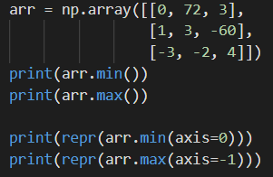

It is often useful to analyze data for its main characteristics and interesting trends. Though we will go more in-depth on data analysis in the section of this course titled Data Preprocessing with scikit-learn, there are still a few techiques in NumPy that allow us to quickly inspect data arrays.
For example, we can obtain minimum and maximum values of a NumPy array using its inherent min and max functions. This gives us an initial sense of the data's range, and can alert us to extreme outliers in the data.

The axis keyword argument is identical to how it was used in np.argmin and np.argmax from the chapter on Indexing. In our example, we use
axis=0 : to find an array of the minimum values in each column of arr
axis=1 : o find an array of the maximum values in each row of arr
Statistical metrics
NumPy also provides basic statistical functions such as np.mean, np.var, and np.median, to calculate the mean, variance, and median of the data, respectively.
The code below shows how to obtain basic statistics with NumPy. Note that np.median applied without axis takes the median of the flattened array.